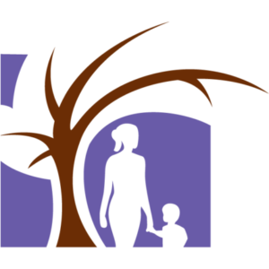
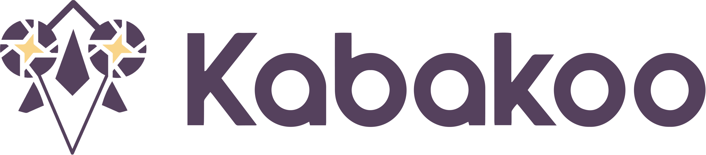
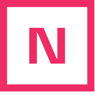
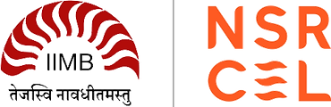

Proposal · with Hamsa Bastani and Osbert Bastani, University of Pennsylvania · six NGO partners
Main ideas from the proposal
Use AI to infer whether digital platforms strengthen people's ability to pursue their own goals.
Start from real traces: text, voice, video, decisions, and linked outcomes from live platforms.
Judge agency, not just success: score intentionality, forethought, self-reactiveness, and self-reflectiveness.
Track change over time: estimate agency at key moments and mark uncertainty when evidence is thin.
Validate lightly: combine expert labels with targeted micro-surveys where they add the most information.
The practical output is a shared measurement instrument that helps product teams improve outcomes and agency together.

Jacaranda Health
Health · Kenya
Agency signal: how mothers ask, decide, and follow care pathways in PROMPTS conversations, linked where possible to care-seeking and visits.
Digital Green
Livelihoods · Kenya, Ethiopia, India
Agency signal: whether FarmerChat users move from advice-seeking to applying or sharing agronomy guidance across product versions.

Kabakoo Academies
Livelihoods · Mali
Agency signal: learner voice/video reflections that reveal goals, confidence, follow-through, and later livelihood progress.

Nova Escola
Education · Brazil
Agency signal: how teachers use a WhatsApp lesson-planning copilot to co-create, adapt, and reuse classroom plans.

The Apprentice Project
Education · India
Agency signal: students' creativity, persistence, and next choices after TAP Buddy feedback, including mother-tongue voice interactions.
Udhyam Learning Foundation
Education · India
Agency signal: chat and submission traces that show grit, motivation, self-efficacy, and entrepreneurial follow-through.